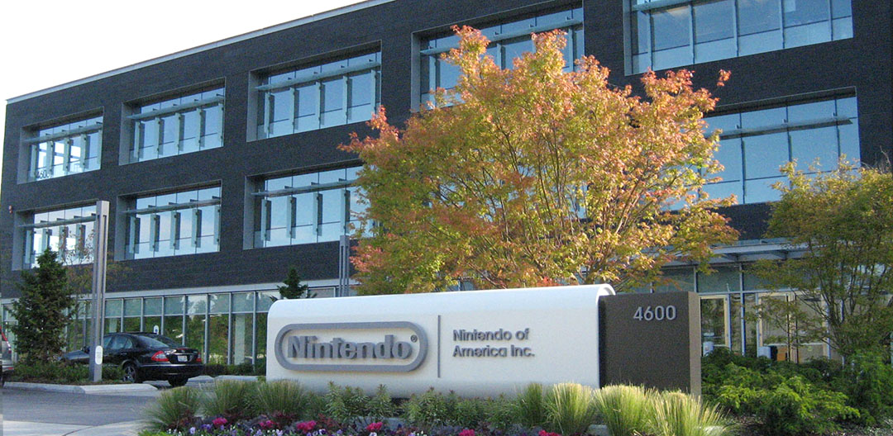

En realidad nunca he tenido un trabajo formal, pero actualmente estoy realizando mi servicio social en el Instituto de Ingeniería en el laboratorio de Energías Renovables y Diseño Bioclimático.

Mi sueño siempre ha sido trabajar para
Google o
Nintendo.
La primera por que he escuchado que es una de las mejores empresas para trabajar en el mundo, aparte de que sería un gran reto para mi.
La segunda es por que siempre he sido un gran fan de los videojuegos y más de esta empresa y sería un gran sueño poder trabajar ahí, colaborando en la elaboración de algún videojuego.
